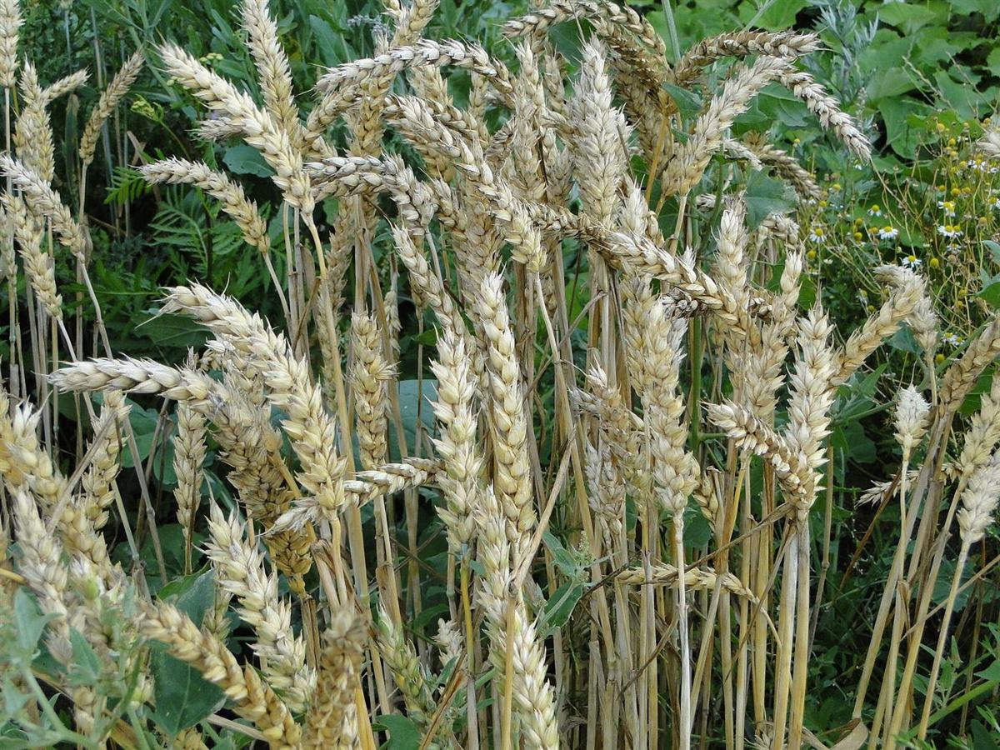
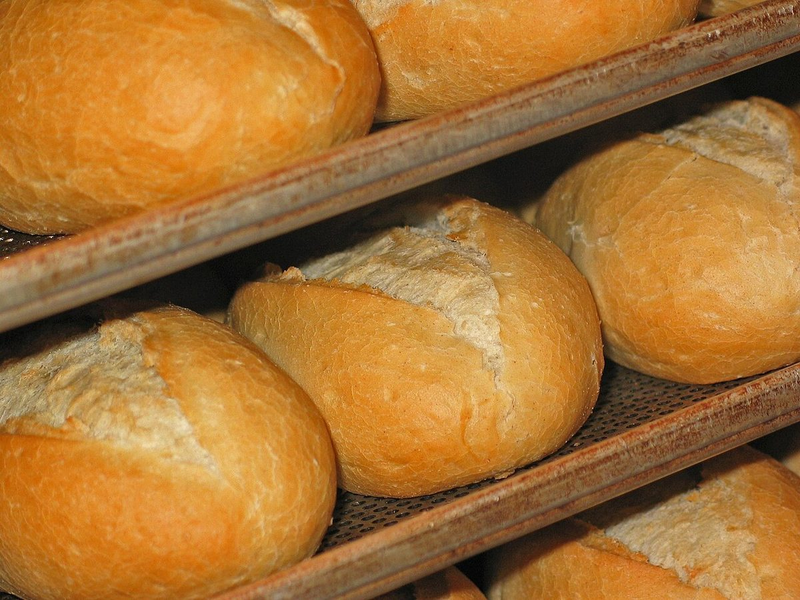
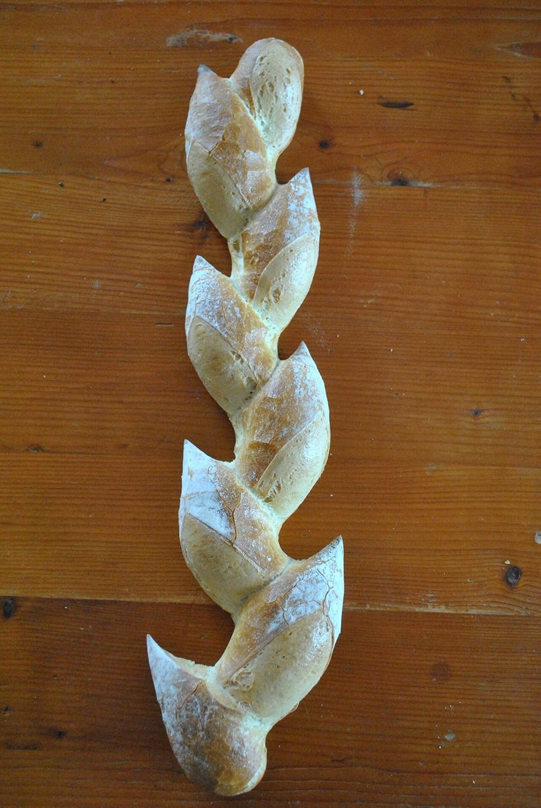

制作側の連想
グローブの部位を、配置図にしてみる
このサイトは、手にはめる革のグローブを図にしたつもりで作りました。六つの部位に番号をふり、上の図と並べています。制作側の連想で、お店の理念・由来とは無関係です。
凡例
六つの部位
- 1ウェブ親指と人差し指のあいだに渡す、革ひもで編んだ部分。
- 2ポケットてのひらの中央にある、ボールを受け止めるくぼみ。
- 3指袋(フィンガー)四本の指を通す細長い袋の部分。
- 4親指親指を通す、横に張り出した袋の部分。
- 5レースパーツ同士をつなぎとめる、細い革ひも。
- 6手首ベルト手首側で留める、幅のあるベルト。
ギャラリー(イメージ)
パンと穂の写真





写真はパンやコーヒー豆などのイメージです。お店のものではなく、お店で提供している商品を示すものでもありません。
ご案内
お店のこと(確認できたものだけ)
| 所在地 | 〒870-1143 大分県大分市田尻５８４−１ |
|---|---|
| 電話 | 準備中 |
| 営業時間 | 準備中 |
| 定休日 | 準備中 |
| ご予約 | 準備中 |
| 駐車場 | 準備中 |
| SNS | Instagram @muginoka2002 |